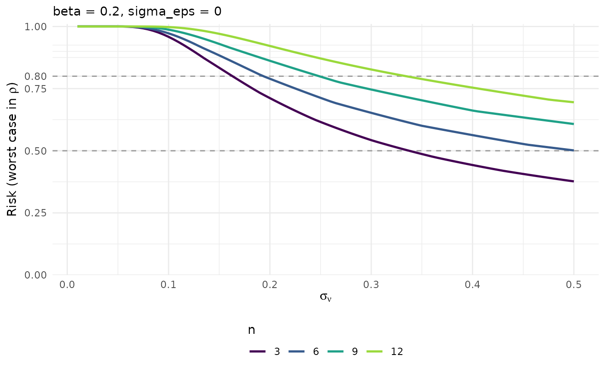
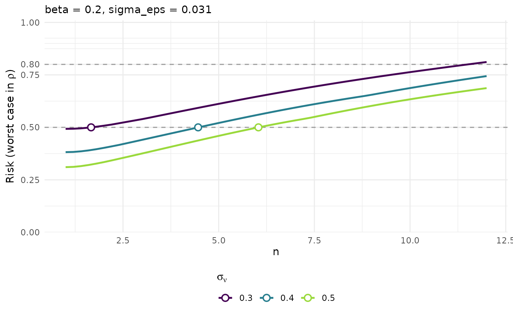

Worst-case risk as a function of sigma_nu
Source:R/risk_utility_figures.R, R/suggest_n.R
pm_plot_risk_max.RdReproduces the middle panel of Figure 3, generalised: the worst case over
rho of the disclosure risk against sigma_nu, one curve per n, at a
fixed sigma_eps. Panels split by scenario when several are present.
Reduces a calibration table to the worst case over rho and plots it against
one of the two mechanism parameters.
Usage
pm_plot_risk_max(
x,
x_axis = c("sigma_nu", "n"),
sigma_nu = NULL,
n = NULL,
beta = NULL,
sigma_eps = NULL,
scenario = NULL,
tau = NULL,
mark_frontier = TRUE,
marks = NULL,
thresholds = c(0.5, 0.8)
)
pm_plot_risk_max(
x,
x_axis = c("sigma_nu", "n"),
sigma_nu = NULL,
n = NULL,
beta = NULL,
sigma_eps = NULL,
scenario = NULL,
tau = NULL,
mark_frontier = TRUE,
marks = NULL,
thresholds = c(0.5, 0.8)
)Arguments
- x
A calibration table (e.g. from
pm_calib_dominance()).- x_axis
Parameter on the x-axis:
"sigma_nu"(default) or"n".- sigma_nu, n, beta, sigma_eps, scenario
Optional values to keep.
- tau
Risk ceiling, drawn as a dashed line. Defaults to
thresholds.- mark_frontier
If
TRUEandx_axis = "n", mark the largest admissiblenof eachsigma_nuwith a point. Requires a singletau.- marks
Values of the x-axis parameter highlighted with a point;
NULLfor none.- thresholds
Risk levels drawn as dashed horizontal lines.
Details
With x_axis = "sigma_nu" this is the middle panel of Figure 3: the risk
decreases with sigma_nu, one curve per n.
With x_axis = "n" it is the view that accompanies pm_suggest_n(): the risk
increases monotonically with n, one curve per sigma_nu. Each crossing of
the ceiling tau is the n_max of its sigma_nu – the very root that
pm_suggest_n() solves for. Set mark_frontier = TRUE to overlay those
points, computed by the same function so the plot and the table always agree.
Examples
grid <- pm_calib_dominance(sigma_nu = seq(0.01, 0.5, 0.005), n = c(3, 6, 9, 12))
pm_plot_risk_max(grid, beta = 0.2)
#> Warning: mark_frontier applies to x_axis = 'n' only; ignored.

grid <- pm_calib_dominance(sigma_eps = 0.031, beta = 0.2,
sigma_nu = c(0.3, 0.4, 0.5), n = seq(1, 12, 0.2))
pm_plot_risk_max(grid, x_axis = "n", tau = 0.5)
